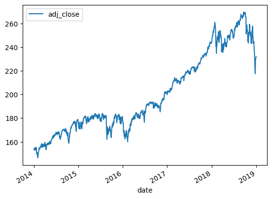
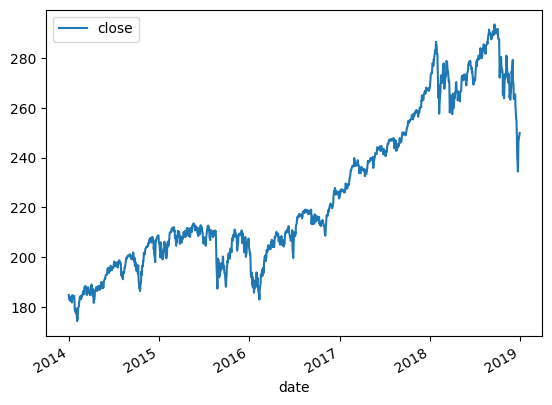
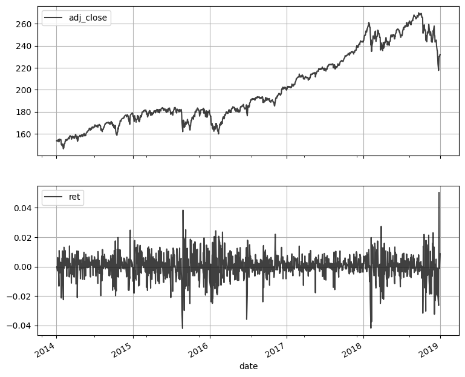
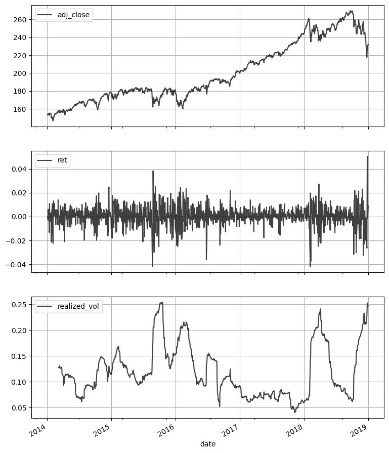

from IPython.display import Image
Image("not_ethical.png")
The purpose of this chapter is to introduce Jupyter notebook files and to give a glimpse of how to use them to work with financial data.
In particular, we will visualize stock index data to observe the leverage effect: when the market suffers losses, prices become more volatile.
We will move quickly without explaining all the details, so don’t worry if you aren’t able to follow everything. It may be worth coming back to this after you have completed the Basic Data Wrangling part of the the book.
The notebook format conveniently allows you to combine sentences, code, code outputs (including plots), and mathematical notation. Notebooks have proven to be a convenient and productive programming environment for data analysis.
Behind the scenes of a Jupyter notebook is a kernel that is responsible for executing computations. The kernel can live locally on your machine or on a remote server.
You will need another piece of software called an integrated development environment (IDE) to actually work with Jupyter notebooks; here are three popular and free IDEs for working with them:
A notebook is structured as a sequence of cells. There are three kinds of cells: 1) code cells that contain code; 2) markdown cells that contain markdown or latex; and 3) raw cells that contain raw text. We will work mainly with code cells and markdown cells.
The cell below is a code cell - try typing the code and then press shift + enter.
from IPython.display import Image
Image("not_ethical.png")
There are two modes in a notebook: 1) edit mode; 2) command mode.
In edit mode you are inside a cell and you can edit the contents of the cell.
In command mode, you are outside the cells and you can navigate between them.
Here are some of my favorite JupyterLab keyboard shortcuts:
edit mode: enter
command mode: esc
navigate up: k
navigate down: j
insert cell above: a
insert cell below: b
delete cell: d, d (press d twice)
switch to code cell: y
switch to markup cell: m
execute and stay on current cell: ctrl + enter
execute and move down a cell: shift + enter
The power and convenience of Python as a data analysis language comes from the ecosystem of freely available third party packages.
Here are the packages that we will be using in this tutorial:
numpy - efficient vector and matrix computations
pandas - working with DataFrames
yfinance - reading in data from Yahoo finance
pandas_datareader - also for reading data from Yahoo Finance
The following code imports these packages and assigns them each an alias.
import numpy as np
import pandas as pd
import yfinance as yf
yf.pdr_override()
from pandas_datareader import data as pdrDataFrameLet’s begin by reading in 5 years of SPY price data from Yahoo Finance.
SPY is an ETF that tracks the performace of the SP500 stock index.
df_spy = pdr.get_data_yahoo('SPY', start='2014-01-01', end='2019-01-01')
df_spy = df_spy.round(2)
df_spy.head()[*********************100%***********************] 1 of 1 completed| Open | High | Low | Close | Adj Close | Volume | |
|---|---|---|---|---|---|---|
| Date | ||||||
| 2014-01-02 | 183.98 | 184.07 | 182.48 | 182.92 | 153.83 | 119636900 |
| 2014-01-03 | 183.23 | 183.60 | 182.63 | 182.89 | 153.80 | 81390600 |
| 2014-01-06 | 183.49 | 183.56 | 182.08 | 182.36 | 153.36 | 108028200 |
| 2014-01-07 | 183.09 | 183.79 | 182.95 | 183.48 | 154.30 | 86144200 |
| 2014-01-08 | 183.45 | 183.83 | 182.89 | 183.52 | 154.33 | 96582300 |
Our stock data now lives in the variable called df_spy, which is a pandas data structure known as a DataFrame. We can see this by using the following code:
type(df_spy)pandas.core.frame.DataFrameDataFrame IndexIn pandas, a DataFrame always has an index. For df_spy the Dates form the index.
df_spy.indexDatetimeIndex(['2014-01-02', '2014-01-03', '2014-01-06', '2014-01-07',
'2014-01-08', '2014-01-09', '2014-01-10', '2014-01-13',
'2014-01-14', '2014-01-15',
...
'2018-12-17', '2018-12-18', '2018-12-19', '2018-12-20',
'2018-12-21', '2018-12-24', '2018-12-26', '2018-12-27',
'2018-12-28', '2018-12-31'],
dtype='datetime64[ns]', name='Date', length=1258, freq=None)I don’t use indices very much, so let’s make the Date index just a regular column. Notice that we can modify DataFrames inplace.
df_spy.reset_index(inplace=True)
df_spy| Date | Open | High | Low | Close | Adj Close | Volume | |
|---|---|---|---|---|---|---|---|
| 0 | 2014-01-02 | 183.98 | 184.07 | 182.48 | 182.92 | 153.83 | 119636900 |
| 1 | 2014-01-03 | 183.23 | 183.60 | 182.63 | 182.89 | 153.80 | 81390600 |
| 2 | 2014-01-06 | 183.49 | 183.56 | 182.08 | 182.36 | 153.36 | 108028200 |
| 3 | 2014-01-07 | 183.09 | 183.79 | 182.95 | 183.48 | 154.30 | 86144200 |
| 4 | 2014-01-08 | 183.45 | 183.83 | 182.89 | 183.52 | 154.33 | 96582300 |
| ... | ... | ... | ... | ... | ... | ... | ... |
| 1253 | 2018-12-24 | 239.04 | 240.84 | 234.27 | 234.34 | 217.60 | 147311600 |
| 1254 | 2018-12-26 | 235.97 | 246.18 | 233.76 | 246.18 | 228.59 | 218485400 |
| 1255 | 2018-12-27 | 242.57 | 248.29 | 238.96 | 248.07 | 230.35 | 186267300 |
| 1256 | 2018-12-28 | 249.58 | 251.40 | 246.45 | 247.75 | 230.05 | 153100200 |
| 1257 | 2018-12-31 | 249.56 | 250.19 | 247.47 | 249.92 | 232.07 | 144299400 |
1258 rows × 7 columns
Notice that even though we ran the .reset_index() method of df_spy it still has an index; now its index is just a sequence of integers.
df_spy.indexRangeIndex(start=0, stop=1258, step=1)As a matter of preference, I like my column names to be in snake case.
df_spy.columns = df_spy.columns.str.lower().str.replace(' ','_')
df_spy.head()| date | open | high | low | close | adj_close | volume | |
|---|---|---|---|---|---|---|---|
| 0 | 2014-01-02 | 183.98 | 184.07 | 182.48 | 182.92 | 153.83 | 119636900 |
| 1 | 2014-01-03 | 183.23 | 183.60 | 182.63 | 182.89 | 153.80 | 81390600 |
| 2 | 2014-01-06 | 183.49 | 183.56 | 182.08 | 182.36 | 153.36 | 108028200 |
| 3 | 2014-01-07 | 183.09 | 183.79 | 182.95 | 183.48 | 154.30 | 86144200 |
| 4 | 2014-01-08 | 183.45 | 183.83 | 182.89 | 183.52 | 154.33 | 96582300 |
Let’s also remove the columns that we won’t need. We first create a list of the column names that we want to get rid of and then we use the DataFrame.drop() method.
lst_cols = ['high', 'low', 'open', 'close', 'volume',]
df_spy.drop(columns=lst_cols, inplace=True)
df_spy.head()| date | adj_close | |
|---|---|---|
| 0 | 2014-01-02 | 153.83 |
| 1 | 2014-01-03 | 153.80 |
| 2 | 2014-01-06 | 153.36 |
| 3 | 2014-01-07 | 154.30 |
| 4 | 2014-01-08 | 154.33 |
Notice that trailing commas do not cause errors in Python.
SeriesYou can isolate the columns of a DataFrame with square brackets as follows:
df_spy['adj_close']0 153.83
1 153.80
2 153.36
3 154.30
4 154.33
...
1253 217.60
1254 228.59
1255 230.35
1256 230.05
1257 232.07
Name: adj_close, Length: 1258, dtype: float64The columns of a DataFrame are a pandas data structure called a Series.
type(df_spy['adj_close'])pandas.core.series.SeriesndarraysPython is a general purpose programming language and was not created for scientific computing in particular. One of the foundational packages that makes Python well suited to scientific computing is numpy, which has a variety of features including a data type called ndarrays. One of the benefits of ndarrays is that they allow for efficient vector and matrix computation.
The values of a Series object is a numpy.ndarray. This is one sense in which pandas is built on top of numpy.
df_spy['adj_close'].valuesarray([153.83, 153.8 , 153.36, ..., 230.35, 230.05, 232.07])type(df_spy['adj_close'].values)numpy.ndarraySeries Built-In MethodsSeries have a variety of built-in methods that provide convenient summarization and modification functionality. For example, you can .sum() all the elements of the Series.
df_spy['adj_close'].sum()251297.16Next, we calculate the standard deviation of all the elements of the Series using the .std() method.
df_spy['adj_close'].std()33.16746781625381The .shift() built-in method will be useful for calculating returns in the next section - it has the effect of pushing down the values in a Series.
df_spy['adj_close'].shift()0 NaN
1 153.83
2 153.80
3 153.36
4 154.30
...
1253 223.51
1254 217.60
1255 228.59
1256 230.35
1257 230.05
Name: adj_close, Length: 1258, dtype: float64Our analysis analysis of the leverage effect will involve daily returns for all the days in df_spy. Let’s calculate those now.
Recall that the end-of-day day \(t\) return of a stock is defined as: \(r_{t} = \frac{S_{t}}{S_{t-1}} - 1\), where \(S_{t}\) is the stock price at end-of-day \(t\).
Here is a vectorized approach to calculating all the daily returns in a single line of code.
df_spy['ret'] = df_spy['adj_close'] / df_spy['adj_close'].shift(1) - 1
df_spy.head()| date | adj_close | ret | |
|---|---|---|---|
| 0 | 2014-01-02 | 153.83 | NaN |
| 1 | 2014-01-03 | 153.80 | -0.000195 |
| 2 | 2014-01-06 | 153.36 | -0.002861 |
| 3 | 2014-01-07 | 154.30 | 0.006129 |
| 4 | 2014-01-08 | 154.33 | 0.000194 |
Notice that we can create a new column of a DataFrame by using variable assignment syntax.
Python has a variety of packages that can be used for visualization. In this chapter we will focus on built-in plotting capabilities of pandas. These capabilities are built on top of the matplotlib package, which is the foundation of much of Python’s visualization ecosystem.
DataFrames have a built-in .plot() method that makes creating simple line graphs quite easy.
df_spy.plot(x='date', y='adj_close');
If we wanted to make this graph more presentable we could do something like:
ax = df_spy.\
plot(
x = 'date',
y = 'adj_close',
title = 'SPY: 2014-2018',
grid = True,
style = 'k',
alpha = 0.75,
figsize = (9, 4),
);
ax.set_xlabel('Trade Date');
ax.set_ylabel('Close Price');
Notice that the ax variable created above is a matplotlib object.
type(ax)matplotlib.axes._axes.Axespandas also gives us the ability to simultaneously plot two different columns of a DataFrame in separate subplots of a single graph. Here is what that code looks like:
df_spy.plot(x='date', y=['adj_close', 'ret',], subplots=True, style='k', alpha=0.75, figsize=(9, 8), grid=True);
The returns graph above is a bit of a hack, it doesn’t really make sense to create a line graph of consecutive returns. However, because there are so many days jammed into the x-axis, it creates a desirable effect and it used all the time in finance to demonstrate properties of volatility.
Notice that whenever there is a sharp drop in the adj_close price graph, that the magnitude of the nearby returns becomes large. In contrast, during periods of steady growth (e.g. all of 2017) the magnitude of the returns is small. This is precisely the leverage effect.
Realized volatility is defined as the standard deviation of the daily returns; it indicates how much variability in the stock price there has been. It is a matter of convention to annualize this quantity, so we multiply it by \(\sqrt{252}\).
The following vectorized code calculates a rolling 2-month volatility for our SPY price data.
df_spy['ret'].rolling(42).std() * np.sqrt(252)0 NaN
1 NaN
2 NaN
3 NaN
4 NaN
...
1253 0.226735
1254 0.252813
1255 0.249195
1256 0.246019
1257 0.247027
Name: ret, Length: 1258, dtype: float64Let’s add these realized volatility calculations todf_spy this with the following code.
df_spy['realized_vol'] = df_spy['ret'].rolling(42).std() * np.sqrt(252)
df_spy| date | adj_close | ret | realized_vol | |
|---|---|---|---|---|
| 0 | 2014-01-02 | 153.83 | NaN | NaN |
| 1 | 2014-01-03 | 153.80 | -0.000195 | NaN |
| 2 | 2014-01-06 | 153.36 | -0.002861 | NaN |
| 3 | 2014-01-07 | 154.30 | 0.006129 | NaN |
| 4 | 2014-01-08 | 154.33 | 0.000194 | NaN |
| ... | ... | ... | ... | ... |
| 1253 | 2018-12-24 | 217.60 | -0.026442 | 0.226735 |
| 1254 | 2018-12-26 | 228.59 | 0.050506 | 0.252813 |
| 1255 | 2018-12-27 | 230.35 | 0.007699 | 0.249195 |
| 1256 | 2018-12-28 | 230.05 | -0.001302 | 0.246019 |
| 1257 | 2018-12-31 | 232.07 | 0.008781 | 0.247027 |
1258 rows × 4 columns
We can easily add realized_vol to our graph with the following code.
df_spy.plot(x = 'date',
y = ['adj_close','ret','realized_vol',],
subplots=True, style='k', alpha=0.75,
figsize=(9, 12),
grid=True);
This graph is an excellent illustration of the leverage effect. When SPY suffers losses, there is a spike in realized volatility, which is to say that the magnitude of the nearby returns increases.
Python Data Science Handbook - Jake VanderPlas
Python for Finance 2e - Yves Hilpisch
Python for Data Analysis 3e - Wes McKinney